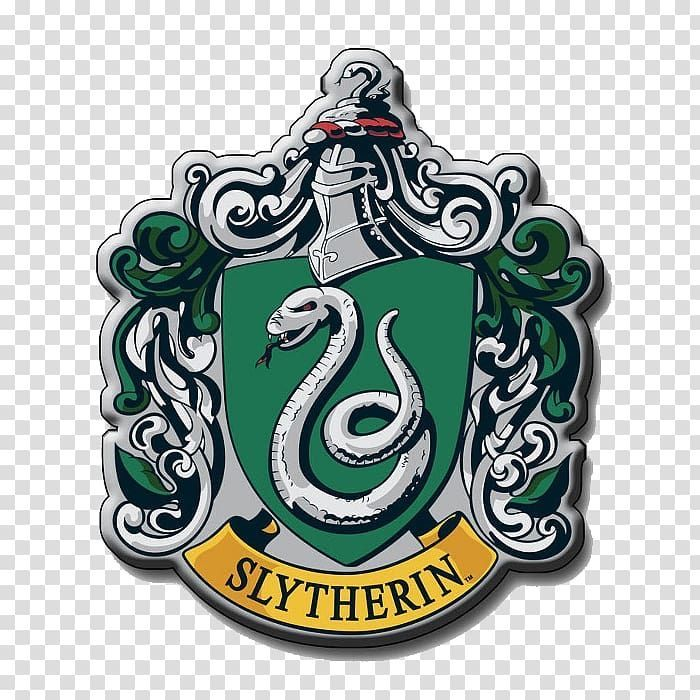
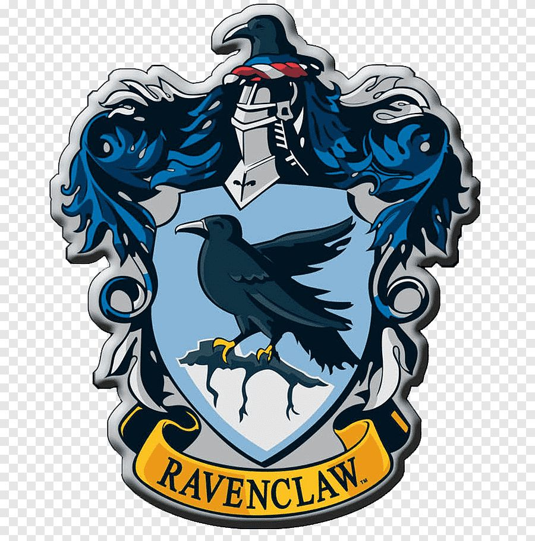
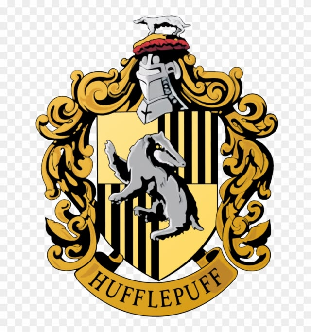

As Quatro Casas de Hogwarts
Os alunos de Hogwarts são divididos em quatro grandes casas, cada uma fundada por um dos grandes bruxos da antiguidade:
1. Grifinória (Gryffindor)
Valoriza a coragem, a ousadia e a nobreza de espírito.

2. Sonserina (Slytherin)
Valoriza a ambição, a astúcia e a desenvoltura.

3. Corvinal (Ravenclaw)
Valoriza a inteligência, o aprendizado e a sabedoria.

4. Lufa-Lufa (Hufflepuff)
Valoriza a lealdade, a dedicação e o trabalho árduo.
